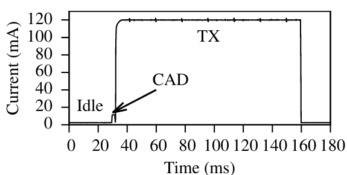
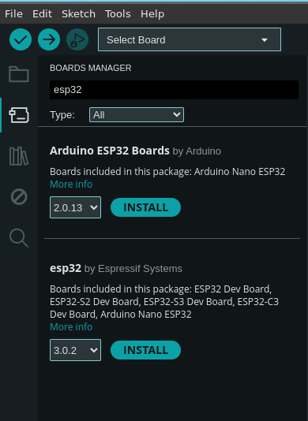
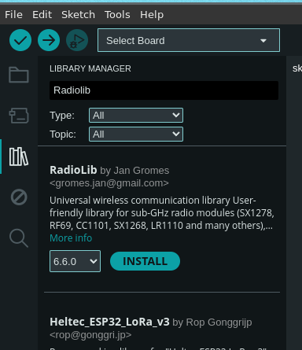
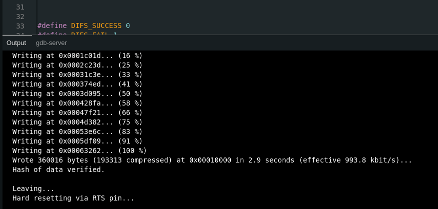

TL;DR
This page aids the reader in deploying CSMA-enabled LoRa and CSMA-enabled LoRaWAN. LMAC forms the basis of CSMA in both. First, we show how to add CSMA to LoRa, built with the help of the popular RadioLib library. You can use it to test LoRa (without LoRaWAN functionality). Second, we show how to deploy a CSMA-enabled LoRaWAN node using the official LoRaWAN library, whose CSMA is based on LMAC.
Bringing LMAC into LoRaWAN was a collaboration between Nanyang Technological University (NTU), Singapore, and Semtech, France, within the LoRa Alliance. Indeed, it was the very first industry-academia collaboration of the Alliance to result in a technical standard. My PhD mentor Mo Li, Jansen C. Liando and I worked with Geoffroy de Guillebon, chair of the CSMA Task Force, and with Miguel Luis and Olivier Seller of Semtech to turn LMAC into TR-013. Olivier Seller, co-inventor of LoRa, later highlighted this collaboration in his keynote at MobiCom 2025. LMAC is integrated into the official LoRaWAN library. Additionally, it is also integrated into the latest radio firmware, for example within Semtech's LR1110 and LR1121 radios.
Why CSMA?
The lack of capability to perform carrier-sense on off-the-shelf LoRa end devices has impeded the implementation of suitable Carrier-Sense Multiple Access (CSMA) schemes for LoRa. Until recently, LoRa networks, including those following the LoRaWAN specification, adopted the ALOHA media access control (MAC) mechanism to access the channel. Although ALOHA is simple to implement, it is often inadequate to keep up with the increasing demand for IoT devices on the ISM band. Even with channel usage limitations (e.g., 0.1% or 1% duty cycle in Europe), ALOHA-based networks experience degraded performance, simply because the number of devices grows every year. With LMAC, goodput improves by up to 2.2× over ALOHA, and devices with weak links to the gateway deliver far more of their frames.
If you are interested in the motivation for LoRa CSMA and the story behind how LMAC was integrated into the LoRaWAN standard, the LoRa Alliance Technical webinar below covers that and more. The five-minute MobiCom pitch presents the details of three advancing versions of LMAC.
LMAC also led to two collaborations: SateRIoT (MobiCom'24) extends reliable LoRa connectivity to rural areas through satellite links, and LoRaHART (ECRTS'25) uses LMAC for retransmissions in real-time LoRa networks. LMAC has also been used by other groups, including in Longan (SenSys'26).
Feasibility
Many wireless technologies, such as Wi-Fi, sense the channel through received signal strength (RSS), the energy within a given bandwidth at a given time. For LoRa, however, RSS is not the right tool to decide whether a channel is busy or free, for three reasons. First, RSS also counts non-LoRa energy, even though LoRa is considerably immune to non-LoRa interference. Second, LoRa encourages concurrent transmissions on different spreading factors (SFs) within a single channel, and RSS cannot tell SFs apart. Carrier sense, however, must find out whether the selected SF is in use. Third, LoRa frames can traverse below the noise floor; a LoRa receiver's sensitivity is ~105 times higher than that of a Wi-Fi radio. An ongoing LoRa transmission may therefore not even show up in RSS measurements (fig. 6 in our TOSN extension). Consequently, LoRa needed a clean-slate CSMA design that would not debilitate the coexistence and multiple-access capabilities these features bring.
Channel Activity Detection (CAD) is a mode available across the entire family of LoRa radios. It was originally designed to detect incoming preambles energy-efficiently, without resorting to the power-hungry continuous listening mode. Preamble detection alone, however, cannot provide full-fledged carrier sense, because LoRa frames also carry data chirps, which it would miss. Our measurement study on a first-generation LoRa radio (SX1272) showed that CAD also detects payload chirps, even those below the noise floor. CAD is also specific to the targeted SF: a CAD for SF12 reports the channel free while an SF9 frame is on the air, and rightly so, since different SFs can share the channel. CAD achieved more than 95% accuracy in detecting the occupancy of an ongoing transmission, and its performance and efficiency have improved with each generation of LoRa radios since. Therefore, CAD is a good enabler for carrier sense.
The CAD pipeline within the radio
Before a CAD, the radio is set to the desired CH/SF combination and switched to CAD mode. A single CAD lasts approximately Tsym + 32/BW milliseconds [AN1200.85], during which the radio receives and then correlates the received samples. Tsym is the airtime of a single LoRa chirp, so CAD time depends on the SF. BW is the channel bandwidth, typically 125 kHz. The figure below shows how little a CAD costs: the current trail of one CAD next to idle and transmit currents on an SX1276 at SF7, a radio from the oldest generation. Newer radios, e.g., the SX126x and LR1110, achieve drastically lower consumption and higher detection accuracy.

For how CAD works inside, see Section 3 of our paper, or the CAD insights page, where I correlate recorded chirps offline under a few scenarios.
Hardware
For LoRaWAN, use Semtech's LR1110 development kit (LR1110DVK1TCKS) on an STM32 Nucleo L476. It runs the official LoRaWAN library out of the box, and it is what the tutorial below uses. An SX1262 shield on the same Nucleo works too.
For LoRa without LoRaWAN, use the Heltec Wireless Stick Lite (V3), which pairs an ESP32-S3 MCU with the SX1262 radio, together with RadioLib. LMAC is not limited to this board. RadioLib supports a wide range of MCU and radio combinations, and as long as the MCU-to-radio connections are correct, the code below should work.
Why two boards? The official LoRaWAN library has no ESP32 port. Its examples target STM32 Nucleo boards, and a port for the nRF52840 also exists. Running it on an ESP32 would mean writing your own hardware layer. RadioLib runs on the ESP32 directly, which keeps physical-layer experiments simple.
Note: I do not profit from any of the listed hardware purchases.
CSMA-enabled LoRa
To deploy CSMA-enabled LoRa, we use the open-source project RadioLib.1 RadioLib carries forward my pull request and correctly performs a CAD for the SX126x radio family. (Note: I have not contributed to any other variations.) The following code uses RadioLib calls, including those configuring CAD, to formulate the logic of LMAC-2 within the application code.
#include <RadioLib.h>
// Define pin mappings for Heltek.
#define NSS_PIN 8
#define DIO1_PIN 14
#define RST_PIN 12
#define BUSY_PIN 13
// SPI Pin definitions.
#define MY_MOSI 10
#define MY_MISO 11
#define MY_SCK 9
// CSMA params.
#define DIFS_slots 1
#define max_shift_credits 5
#define DIFS_SUCCESS 0
#define DIFS_FAIL 1
int BO_MAX = 3;
// Declare an SPIClass object for custom SPI settings
SPIClass mySPI(HSPI);
// Initialize the SX1262 with the specific SPI and control pins
SX1262 radio = new Module(NSS_PIN, DIO1_PIN, RST_PIN, BUSY_PIN, mySPI);
float channels[8] = {867.1, 867.3, 867.5, 868.1, 868.3, 868.5, 868.7, 868.9};
uint8_t CH_limit = sizeof(channels) / sizeof(channels[0]);
float CH = channels[0];
uint8_t SF = 10;
uint8_t dB = 14;
uint8_t CR = 8;
long BW = 125000;
uint8_t CH_index = 0;
uint32_t BO = 0;
bool DIFS_result = 0;
uint32_t cad_count = 0;
uint32_t pktCount = 0;
uint8_t nid = 0;
uint8_t shift_credits = max_shift_credits;
uint32_t timeBeacon_ms = 0;
uint32_t timeACK_ms = 0;
int beaconNum = 0;
uint16_t txDelay = 0;
uint32_t rTxTime = 9999;
uint8_t tx_SF = 0;
uint8_t tx_CH = 0;
void ChoseRandomCH() {
if (shift_credits <= 0) return;
CH_index = random(CH_limit);
CH = channels[CH_index];
if (radio.setFrequency(CH) == RADIOLIB_ERR_INVALID_FREQUENCY) {
Serial.print("Selected frequency is invalid: ");
Serial.println(CH);
radio.setFrequency(channels[0]);
}
}
void ComputeRandomBackOff() {
BO = random(1, BO_MAX + 1);
}
// Returns true for a busy channel and false for a free channel
bool doCAD() {
int state = radio.scanChannel();
cad_count++;
if (state == RADIOLIB_LORA_DETECTED) {
return true;
} else if (state == RADIOLIB_CHANNEL_FREE) {
return false;
} else {
Serial.print(F("CAD failed, code: "));
Serial.println(state);
while (1);
}
}
bool doDIFS() {
for (uint8_t i = DIFS_slots; i > 0; i--) {
if (doCAD()) {
return DIFS_FAIL;
}
}
return DIFS_SUCCESS;
}
void doDIFS_blocking() {
do {
DIFS_result = doDIFS();
if (DIFS_result) {
ChoseRandomCH();
}
} while (DIFS_result == DIFS_FAIL);
}
bool decrementBOCounter() {
if (BO == 0) return false;
do {
if (doCAD()) return true;
BO--;
} while (BO > 0);
return false;
}
void performCSMA() {
ComputeRandomBackOff();
do {
doDIFS_blocking();
} while (decrementBOCounter());
}
void setup() {
Serial.begin(9600);
while (!Serial);
mySPI.begin(MY_SCK, MY_MISO, MY_MOSI);
if (radio.begin() != RADIOLIB_ERR_NONE) {
while (true);
}
radio.setFrequency(868.1);
radio.setSpreadingFactor(12);
radio.setBandwidth(125.0);
radio.setCodingRate(8);
radio.setSyncWord(0x34, 0x44);
radio.setOutputPower(14);
radio.setPreambleLength(10);
radio.setCRC(true);
}
void loop() {
String str = "Hello LoRa!";
performCSMA();
int state = radio.transmit(str);
if (state == RADIOLIB_ERR_NONE) {
Serial.println(F("Transmission successful!"));
}
delay(1000);
}It does this at the application level because it is easier than making changes to RadioLib. To deploy it, first install the RadioLib library and then install support for ESP32 processors within the Arduino IDE.


Next, configure the IDE to compile code for the ESP32-S3 by selecting Tools → Board → esp32 → ESP32S3 Dev Module.
Plug in the device via USB and find its serial port under Tools → Port. For me, the port was /dev/ttyUSB0.
Before clicking upload, add yourself to the UNIX group that may read and write the serial ports of your computer, and reboot for the new privileges to take effect:
$ sudo usermod -a -G dialout $USERFinally, select the serial port and click upload at the top right. You should see a message similar to the one below if the upload succeeds. You can then follow the application's debug messages in the IDE's serial monitor.

1 I also enabled LMAC-based CSMA in RadioLib's LoRaWAN stack. For LoRaWAN, though, I recommend Semtech's official library below. ↩
CSMA-enabled LoRaWAN
To deploy CSMA-enabled LoRaWAN, you may use the standard LoRaWAN library, LoRa Basics Modem (LBM), maintained by Semtech. LBM has used LMAC to enable CSMA since 2023. This approach is suited for users who require strict adherence to LoRaWAN standards, or if you simply need the latest features LoRaWAN offers.
You do not need to enable CSMA. It is on by default in Semtech's official examples: build the standard example, and every LoRa uplink is preceded by carrier sense.
The steps below are a short getting-started guide for someone new to LoRaWAN. They build the official Periodical Uplink example, main_periodical_uplink.c in SWL2001/lbm_examples/main_examples.
Starting from an example is the best way to get a CSMA-enabled LoRaWAN application.
The example joins your network and then sends an uplink every 60 seconds (PERIODICAL_UPLINK_DELAY_S), or whenever you press the blue button on the Nucleo.
The commands assume the LR1110 kit on a Nucleo L476; the SX1262 alternative is noted where it differs.
They follow LBM release v4.9.0.
The LoRa Alliance webinar walks through an older version from t=21:32; the CSMA build flags shown there are no longer needed.
-
Install the toolchain. To compile LBM, you need
arm-none-eabi-gccandarm-none-eabi-newlibif you are on Arch GNU/Linux. For Debian GNU/Linux, usegcc-arm-none-eabi. You also needopenocdto flash the board. You may need to find the equivalent names for your preferred distribution; these are standard packages in most of them.Arch$ sudo pacman -S arm-none-eabi-gcc arm-none-eabi-newlib openocdDebian$ sudo apt install gcc-arm-none-eabi libnewlib-arm-none-eabi openocd -
Clone the library.
$ git clone https://github.com/Lora-net/SWL2001.git $ cd SWL2001Optionally, change
PERIODICAL_UPLINK_DELAY_Sinmain_periodical_uplink.cto your desired uplink interval in seconds. Make sure it complies with the duty-cycle limitations in your country. -
Set your LoRaWAN keys. An end-device cannot join the network without its keys. Setting up a complete LoRaWAN system, i.e., a network server such as TTN or Actility ThingPark, is outside the scope of this tutorial, so I assume you already have keys for your end-device from one. Put them in
lbm_examples/main_examples/example_options.h:example_options.hUSER_LORAWAN_DEVICE_EUI // DevEUI USER_LORAWAN_JOIN_EUI // JoinEUI USER_LORAWAN_APP_KEY // AppKey -
Build.
$ make -C lbm_examples full_lr1110 \ MODEM_APP=PERIODICAL_UPLINK BOARD=NUCLEO_L476For the SX1262 shield, use
full_sx1262instead offull_lr1110.The example runs in EU868 by default. For another region, set
MODEM_APP_REGIONto one of the region names inlbm_lib/smtc_modem_api/smtc_modem_api.h, and optionallyREGIONto compile only that region. For example, for AS923 group 1:$ make -C lbm_examples full_lr1110 \ MODEM_APP=PERIODICAL_UPLINK BOARD=NUCLEO_L476 \ MODEM_APP_REGION=SMTC_MODEM_REGION_AS_923_GRP1 REGION=AS_923REGIONalone only decides which regions are compiled in; it does not change the region the device runs in. -
Flash the board. The firmware lands in
lbm_examples/build_<radio>_l4/asapp_<radio>.bin, orapp_<radio>_<REGION>.binif you passedREGION. With the board connected to your PC:LR1110$ openocd -f interface/stlink-v2-1.cfg -f target/stm32l4x.cfg \ -c "program lbm_examples/build_lr1110_l4/app_lr1110.bin verify reset exit 0x08000000"SX1262$ openocd -f interface/stlink-v2-1.cfg -f target/stm32l4x.cfg \ -c "program lbm_examples/build_sx1262_l4/app_sx1262.bin verify reset exit 0x08000000"With
REGION=AS_923, the file isapp_lr1110_AS_923.bin(orapp_sx1262_AS_923.bin). -
Open the serial console. The modem's debug trace is on by default. Make sure
screenis installed; it is in the software repositories of all GNU/Linux distributions.$ screen /dev/ttyACM0 115200CSMA now runs before every LoRa uplink without you doing anything. The default trace stays quiet about it and prints
RP_STATUS_CAD_POSITIVEonly when a CAD finds the channel busy. To watch every carrier-sense step, setENABLE_DEBUG_TPMto1near the top oflbm_lib/smtc_modem_core/modem_supervisor/modem_tx_protocol_manager.cand rebuild. The trace then printsTPM Launch CSMA Service at <time>before each LoRa uplink.
CSMA is on by default because the examples set ALLOW_CSMA and ALLOW_CSMA_AND_ENABLE_AT_BOOT to yes in lbm_examples/app_makefiles/app_options.mk. Set ALLOW_CSMA_AND_ENABLE_AT_BOOT=no only if you want to turn it off.
Cite LMAC
We request that publications derived from the use of any part of the code on this page explicitly acknowledge the following two works:
@article{LMAC_TOSN,
author = {Gamage, Amalinda and Liando, Jansen and Gu, Chaojie and Tan, Rui and Li, Mo and Seller, Olivier},
title = {LMAC: Efficient Carrier-Sense Multiple Access for LoRa},
journal = {ACM Trans. Sen. Netw.},
volume = {19},
number = {2},
year = {2023},
doi = {10.1145/3564530},
publisher = {ACM}
}@inproceedings{lmac,
title = {LMAC: Efficient Carrier-Sense Multiple Access for LoRa},
author = {Amalinda Gamage and Jansen C. Liando and Chaojie Gu and Rui Tan and Mo Li},
booktitle = {Proceedings of the 26th Annual International Conference on Mobile Computing and Networking (MobiCom~'20)},
doi = {10.1145/3372224.3419200},
year = {2020},
publisher = {ACM}
}You may also take a look at our previous work, which dives into LoRa's physical layer and network performance.
@article{liando2019,
title = {Known and unknown facts of LoRa: Experiences from a large-scale measurement study},
author = {Jansen C. Liando and Amalinda Gamage and Agustinus W. Tengourtius and Mo Li},
journal = {ACM Transactions on Sensor Networks (TOSN)},
volume = {15},
number = {2},
year = {2019},
publisher = {ACM}
}